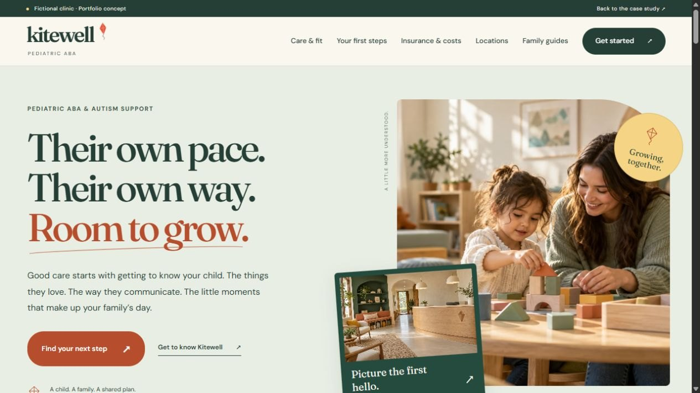
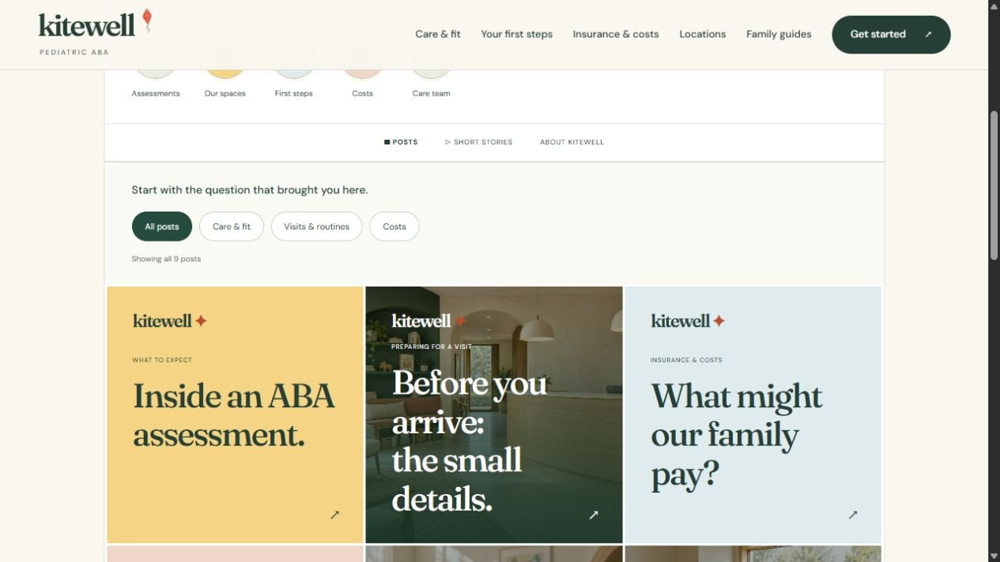
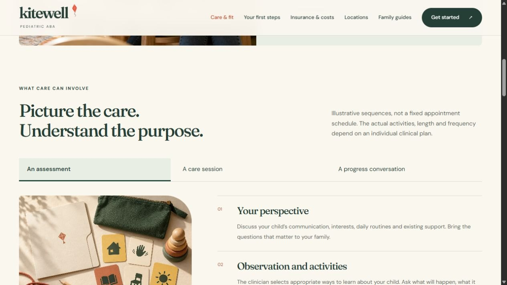
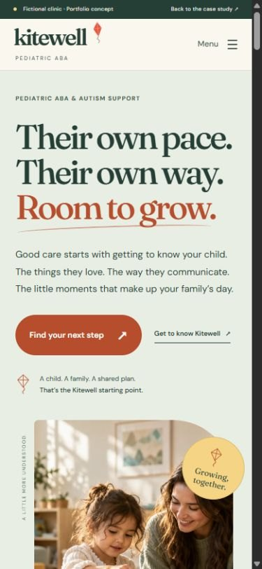

02Fictional clinic · Content, brand, build & intake design
Before a parent gets in touch, give them something to go on.
One parent question, followed from the first draft to the live page.
Scroll: write, design, build
Kitewell is a fictional portfolio concept. There is no operating clinic, commissioned client, clinical review or measured campaign result.

01Write
Start with the parent’s question.
The first draft was friendly. It still left the parent to ask.
The first draft: Let’s make room for the practical questions.
AK · 01Friendly isn’t the same as useful.
Then ask it for them.
Name the decision, and the page has a job.
The rewrite: What might your family pay? Start with a clear estimate.
02Design
Give the answer a place.
Grey boxes first. The question on top, the estimate checklist right under it.
AK · 02Same words. Now they have a home.
Make it feel like Kitewell.
Warm cream, deep green and a terracotta kite. Calm enough to read.
03Build
Ship the real page.
One of 25 pages, checked at phone and desktop widths.
AK · 03Live. One tap away.
Every page has two sides.
Flip it. The clinic team sees who picks up the question next.

- 01Write
- 02Design
- 03Build
I wrote it, designed it and built it.
From the first click to the front desk, you talk to me.
Take the guided tour ↗For the curiousThe video, the full kit, every version and how it was checked
- Project
- Independent fictional clinic
- Role
- Content, brand, build & intake design
- Deliverable
- 25 pages · 2 views · 4 social profiles · guided tour
- Tools
- HTML, CSS & JavaScript · Playwright and axe checks
Walkthrough
Kitewell in 48 seconds
A 48-second captioned tour of the finished work. Recorded from the live demo on this site; no sound.
The kit: what Kitewell shipped, beyond the pages
Reality checkThe real market, references and rules behind a fictional practice
Modeled on · Austin, TX
Autism diagnoses are rising, Texas Medicaid has paid for ABA since 2022, and Texas licenses behavior analysts by law. Austin families have several established ABA providers to compare, so a clinic that explains intake, cost and roles plainly has a real place.
- About 1 in 31 (3.2%) children aged 8 were identified with autism in CDC's ADDM Network data for surveillance year 2022. Source ↗
- Texas Medicaid began covering ABA for members aged 20 and younger for dates of service on or after February 1, 2022, with Licensed Behavior Analysts as the enrolled provider type and prior authorization required. Source ↗
- TDLR reported 6,638 behavior analyst licensees in fiscal year 2025: 6,410 Licensed Behavior Analysts and 228 Licensed Assistant Behavior Analysts. Source ↗
Real
- Cortica, Hopebridge and Action Behavior Centers as public-site references (no affiliation)
- CDC, Texas Medicaid and TDLR figures above
- Texas behavior analyst licensing (TDLR), the BACB Ethics Code, HIPAA, Texas HB 300 and Section 504
- Google and Meta health-advertising policies
- The working website, its parent and clinic-team views, and its privacy-first intake demo
Invented
- The name Kitewell and its brand identity
- The Northside and Riverbend location concepts and their sample availability (openings and waitlist)
- Team roles and the intake flow with preset fictional names
- The referral acknowledgement (reference REF-0142) and question-pack tools
- The social profiles and posts
- AI-generated family scenes, rooms and welcome-kit images
Real providers reviewed References, not clients
- Cortica ↗What their site does: Presents "whole-child" care that combines ABA, developmental therapies and medical care, with an intake visit as the first step, a referral page for providers and a verify-coverage link.What this concept does: Kitewell covers ABA only and says it does not diagnose, so families see the difference between a diagnostic evaluation and an ABA assessment.
- Hopebridge ↗What their site does: Autism therapy centers offering ABA, occupational, speech and feeding therapy, with a "Get Started" form, a physician referral section, and benefits coordinators who help with authorizations.What this concept does: Kitewell keeps a separate route for referring offices and an insurance checklist, but treats an inquiry as a request for review, not an approval or a booking.
- Action Behavior Centers ↗What their site does: Center-based ABA in nine states including Texas (Austin is among its city links), with "Find care" and "Get started" routes, insurer logos, and parent reviews with an aggregate rating on its homepage.What this concept does: Kitewell uses visible location routes (one location with openings, one with a waitlist) but shows no parent reviews, ratings or insurer logos, because it has no real families or contracts.
Rules the marketing has to follow
| Rule | What it requires | On this site |
|---|---|---|
| Texas behavior analyst licensing ↗ | In Texas, only a person licensed under Occupations Code chapter 506 may practice applied behavior analysis or use the titles "licensed behavior analyst" or "behavior analyst", subject to exceptions in the statute. TDLR issues the licenses. | The team page describes roles (BCBA, RBT, intake, billing) rather than real people, and tells families to ask about credentials, supervision and any required licensure. Would need: each clinician's TDLR license shown with their name, and wording that makes clear BACB certification and Texas licensure are separate. |
| BACB Ethics Code: testimonials and client content ↗ | BACB certificants may not solicit testimonials from current clients for advertising (5.07). Former-client testimonials must be labeled solicited or unsolicited (5.08). Client content on professional social media needs informed consent before each post and a consent disclaimer (5.10, 5.11). The code has applied since January 1, 2022. | No testimonials, parent quotes or reviews. The demo page says family scenes are AI-generated and depict no real patients, and the quoted lines on the team page are questions for parents to ask. Would need: a written social-media consent process before any real client appears. |
| HIPAA and tracking technologies ↗ | HHS says tracking tools on a clinic's site can expose protected health information, that tracking on logged-in pages such as portals generally has access to it, and that every tracking vendor that receives it must sign a business associate agreement (BAA). A federal court in Texas vacated part of this guidance on June 20, 2024 (the part about public, logged-out pages); the rest of the page still stands. | The demo page says there are no advertising pixels, analytics tags or connected clinical systems. The inquiry flow uses preset fictional names and submits nothing; the only browser storage is the visitor's chosen view (parent or clinic team) and whether the welcome note was seen. Would need: BAAs with any intake, scheduling or analytics vendor, and no third-party tags on inquiry or referral pages. |
| Texas notice of electronic disclosure (HB 300) ↗ | Texas law's definition of a covered entity is broader than HIPAA's and includes anyone who comes into possession of health information. Covered entities must tell patients, for example on their website, when health information may be disclosed electronically, and get authorization for disclosures outside treatment, payment and operations. | The referral page says records must go only through the clinic's verified secure process and that the website accepts no documents. Would need: a Texas electronic-disclosure notice on the real privacy page. |
| Google Ads: health in personalized advertising ↗ | Google treats health as a sensitive interest category. Ads promoting it cannot use advertiser-curated audiences: no Customer Match, no remarketing lists built from site visitors, no lookalike segments. Google's predefined audiences and contextual targeting remain available. | No ad tags. Would need: no remarketing from inquiry or insurance pages, and campaigns built on contextual or predefined audiences. |
| Meta ads: personal attributes ↗ | Meta ads must not assert or imply a person's attributes, including physical or mental health and medical conditions. Meta's own non-compliant example is "Depression getting you down? Get help now." | Posts speak to parents in general ("Ask who will work with your child") and never assert that a child has autism. Would need: the same check on paid ads; a line like "Does your child have autism?" would break the policy. |
| HHS Section 504 web accessibility rule ↗ | Clinics that receive HHS federal financial assistance must make their websites and apps meet WCAG 2.1 Level AA. An interim final rule effective May 7, 2026 moved the deadlines to May 11, 2027 (15 or more employees) and May 10, 2028 (fewer than 15). A real clinic would confirm with counsel whether it is a recipient. | Every page declares its language and has a skip link, and every image tag (108 across the pages) carries alt text. No formal WCAG 2.1 AA audit has been run. Would need: a full audit, including the interactive tour and worksheets, before launch. |
Sources checked October 2026. This is a summary for a portfolio, not legal advice; a real clinic would confirm its obligations with counsel.
Measured qualityLighthouse and axe, run October 28, 2026
- 93Performance
- 100Accessibility
- 100Best practices
- 7/8SEO checks
- Accessibility issues (axe, WCAG 2.1 AA)
- 0
- across 6 pages
- Homepage weight
- 494 KB
- everything a first visit downloads
- Largest content painted
- 3.0 s
- simulated mid-range phone, slow 4G
- Layout shift
- 0.004
- 0.1 or less counts as good
Homepage measured with Lighthouse 12 (mobile) on /sites/kitewell/, served locally without compression, so live numbers should be at least this good. The one SEO check that fails is “page can be indexed”: demos are kept out of search on purpose because they’re fictional. Rerun with scripts/kit/measure-quality.mjs.
Process documentsBrief · sitemap · homepage outline · keyword map
The problem
Warm reassurance alone leaves parents to ask the real questions themselves: what care involves, whether their child will be heard, whether it fits the week and what it might cost.
Goals
- Explain care before asking for an inquiry.
- Make child comfort, costs and family routines easy to find.
- Carry the same useful content into four social channels.
- Show the next owner of each inquiry without implying a live clinical integration.
Questions the site must answer
- What happens in care: an assessment, a session and a review?
- Will my child be heard, and what happens if they need a break or don’t want to take part?
- Can this fit our week, including school and family routines?
- What might our family pay, and what does a benefits review actually tell us?
- Does checking insurance confirm an appointment?
Keyword map
| Topic | Targets | Intent | Page |
|---|---|---|---|
| ABA care for children | pediatric ABA therapy · ABA therapy for children · what is ABA therapy | informational | care.html |
| ABA costs | does insurance cover ABA therapy · ABA therapy cost · ABA therapy out-of-pocket cost | commercial | insurance.html |
| Benefits and authorization | ABA prior authorization · ABA insurance authorization process · ABA benefits check | informational | insurance-questions.html |
| Getting started | how to start ABA therapy · ABA referral next steps · ABA waitlist | informational | getting-started.html |
| Choosing a provider | questions to ask an ABA provider · how to choose an ABA provider · first call with an ABA clinic | informational | first-conversation.html |
| Care-team roles | BCBA vs RBT · who works with my child in ABA · ABA supervision | informational | meet-the-team.html |
| Preparing for a first visit | first ABA clinic visit · preparing a child for a new clinic visit · ABA visit checklist | informational | visit-guide.html |
| Professional referrals | refer a patient for ABA therapy · ABA referral for pediatricians · ABA provider referral process | commercial | referrals.html |
| Local discovery | ABA therapy near me · ABA clinic Austin · autism support center near me | local | locations.html |
| Does insurance cover ABA therapy in Texas? A guide for families | ABA therapy insurance coverage Texas · Texas autism insurance mandate · Texas Medicaid ABA therapy | informational | aba-therapy-insurance-coverage-texas.html |
Keyword targets are proposals from patient-question research; search volumes were not measured.
Flagship article1,109 words · 8 sources
Search result preview Mockup
kitewell.example › aba-therapy-insurance-coverage-texas
ABA Therapy Insurance Coverage in Texas: A Family Guide
How ABA coverage works in Texas: the state autism mandate, its age-10 rule, Texas Medicaid for under-21s, self-funded employer plans and what to ask.
- Target
- ABA therapy insurance coverage Texas
- Also covers
- Texas autism insurance mandate · Texas Medicaid ABA therapy · does insurance cover ABA therapy · self-funded plan autism coverage
- Intent
- informational: a Texas parent or caregiver exploring ABA wants to know whether their child's plan is likely to cover it and what to check before an assessment.
- Review
- Written by Ahsan Khan. The practice is fictional. In client work, your clinician reviews and approves every article before it is published.
The 8 sources
- Texas Insurance Code § 1355.015, Required Coverage for Certain Conditions Related to Autism Spectrum Disorder (FindLaw, text current as of Jan. 1, 2026)
- Texas Insurance Code § 1355.002, Applicability of Subchapter (Texas Public Law)
- Fully insured vs. self-insured (Texas Department of Insurance)
- Getting help with a health plan TDI doesn't regulate (Texas Department of Insurance)
- Texas State Plan Amendment TX 21-0002, Applied Behavior Analysis (Medicaid.gov, CMS)
- 1 Tex. Admin. Code § 354.5001, Autism Services: Purpose and Scope (Justia)
- 1 Tex. Admin. Code § 354.5021, Service Description, Requirements, and Limitations for ABA Services (Cornell Legal Information Institute)
- Appealing a health plan decision (HealthCare.gov)
Read “Does insurance cover ABA therapy in Texas? A guide for families”
Search volumes were not measured, so none are claimed.
Ad packGoogle search · Facebook & Instagram · policy notes
Search ad preview Mockup
Sponsored · kitewell.example/getting-started
Kitewell Pediatric ABA | Pediatric ABA in Austin | Their Own Pace. Their Own Way.
Pediatric ABA that starts with who your child is: interests, communication, routines.
Campaign: Kitewell | Search | Pediatric ABA | Austin (sample). Final page: getting-started.html.
All 15 headlines 30 characters max
- Kitewell Pediatric ABA22
- Pediatric ABA in Austin23
- Their Own Pace. Their Own Way.30
- Start With a Conversation25
- Explore ABA, No Commitment26
- Know What Intake Involves25
- ABA Insurance Questions23
- Get a Clear Cost Estimate25
- Meet the Care Team Roles24
- Family Priorities Lead22
- Northside + Riverbend21
- Take a Look Around18
- Questions for a First Call26
- For Referred Families21
- Room to Grow12
Descriptions 90 max
- Pediatric ABA that starts with who your child is: interests, communication, routines.85
- Exploring ABA or already referred? See each step, who handles it and what comes next.85
- Ask what an estimate is based on: plan, provider, location and proposed schedule.81
- Families can ask questions, question a method and pause. A plan is a conversation.82
Keywords
"aba therapy austin" · [aba therapy near me] · "pediatric aba austin" · "aba clinic austin" · "aba provider austin" · "aba assessment" · "aba therapy insurance" · "autism support for kids austin" · "bcba clinic austin" · "aba therapy referral"
Negative keywords
jobs · rbt jobs · bcba jobs · rbt certification · salary · bar association · routing number · aba number
Facebook & Instagram ads Mockups


How these ads stay within the rules
| Rule | How it’s handled |
|---|---|
| No implied personal attributes ↗ | Copy describes the clinic, never the reader. No "you" + condition lines such as "Is your child autistic?" or "Worried about your child's development?"; copy talks about the clinic, the spaces and the questions. |
| Sensitive detailed targeting is gone ↗ | Meta audiences use location and age only. No health-cause, condition or life-event interests, even where a similar option still appears. No autism, parenting or special-needs segments; the age band is the only proxy for caregivers. |
| Health is a sensitive targeting category ↗ | Search campaigns run on keywords and location only. No remarketing, Customer Match or custom segments built from care, insurance or intake page visitors. |
| No outcome or recovery claims ↗ | No "recovery", "cure", "indistinguishable" or progress-rate claims. Language is neurodiversity-affirming: strengths, interests, communication, family priorities and the right to pause. |
| No fear, false urgency or improbable results ↗ | No countdowns, "today only" lines, or illness-based fear. No "spots filling fast" or "early intervention window" fear lines, and no availability claim; the site says openings vary by location and an inquiry is not a booking. |
| Tracking pixels on a health site ↗ | Meta Pixel and Google tags stay off the inquiry, referral and insurance pages, where a caregiver could reveal a child's information. Conversions are counted from a generic thank-you page with no visit reason in the URL, and any vendor that would touch PHI needs a BAA. |
Written for a fictional practice; nothing here has run or been measured. Every character limit was checked by script.
Local SEO & reviewsGoogle Business Profile · review requests · safe replies
Business Profile Mockup
Kitewell
Applied behavior analysis therapist · Child health care center · Disability services and support organization
Kitewell is a pediatric ABA clinic with two settings, Northside by the park and Riverbend by the river. Care starts with getting to know your child: the things they love, the way they communicate and the routines that make up your family’s day. An ABA assessment informs a proposed plan; it is not an autism diagnostic evaluation, and we do not provide diagnosis. Families help set goals that matter at home, can ask about any method, and can ask for a pause or a change. Our intake team explains each step, what information is needed and what an estimate is based on. Ask us about current availability at each location.
Services
- ABA assessment. An assessment that gets to know your child and informs a proposed ABA plan. It is not a diagnostic evaluation. We explain what will happen, how breaks work and what we learned.
- Pediatric ABA sessions. Sessions that work toward agreed goals through play, routines and activities linked to everyday life, with attention to your child’s communication, comfort and choices.
- Family progress conversations. Regular conversations about what was worked on, what the team noticed and whether the plan still fits. Families can question methods and ask for changes.
- Intake and insurance guidance. Help understanding referral needs, plan requirements and what an estimate is based on. A benefits review does not confirm final payment.
- Referral intake for offices. A clear route for referring offices, with an acknowledgement that names the intake owner and next action. Records are accepted only through our secure process.
Posts
- Update
An ABA assessment and an autism diagnostic evaluation serve different purposes. An ABA assessment informs a proposed care plan. Our care page explains the four parts to discuss before attending.
Button: Learn more - Update
Who is with my child? The person in a session may have a different role from the clinician who owns the plan. Ask about names, credentials, supervision and who to contact with a concern.
Button: Learn more - Event
Sample event: a quiet-hours open house at Northside. Families can see the welcome desk, play room and quiet room at their own pace. Low lighting, no crowds, come and go as you like.
Button: Learn more
Questions & answers
- Do you diagnose autism?
- No. Kitewell provides pediatric ABA. For developmental or diagnostic questions, start with your child’s pediatric clinician, who can discuss an evaluation route.
- Can parents be part of sessions and planning?
- Yes. Families help set goals, receive regular updates and can ask about any method, request a pause or discuss alternatives.
- Do you take my insurance?
- It depends on your exact plan, the provider, the location and the proposed care. Call intake and we will explain what is confirmed, estimated or still pending.
Asking for reviews: every patient, the same way
- Ask every patient with a completed visit. No screening by satisfaction score first (no review gating).
- No incentives of any kind for a review: no discounts, gifts, raffles or credits.
- Follow FTC rules: no fake, bought or staff-written reviews, and no pressure to remove a negative one.
- Never confirm or deny in a public reply that someone is a patient.
- No PHI anywhere: requests and replies name no visit type, clinician, date or condition.
- Ask caregivers, never children, and never post or reply with a child’s name, photo or care details.
When: One email to the caregiver 2 weeks after the assessment conversation, then at most once every 6 months during ongoing care, plus one opt-in SMS reminder per request. Every family is asked on the same schedule; none are skipped based on a survey or a session note.
Subject: Would you share your experience?
Hello, Thank you for spending time with Kitewell. If you are willing, we would value an honest review of your family’s experience with us, whatever it has been. It helps other families decide where to start. Leave a review: [Google review link] Reviews are public, so please leave out your child’s name, photos and any health or care details. If you want to talk about care, call intake at [main number]. With thanks, The Kitewell team
Text message
Kitewell: an honest review helps other families decide where to start: [short link]. Please no names or care details. Reply STOP to opt out.
Reply to a positive review
Thank you for taking the time to write this. We will share it with the whole Kitewell team. — The Kitewell team
Reply to a negative review
Thank you for telling us this. We take every concern seriously, and privacy rules mean we cannot discuss any details here. Please call our clinical director, [Name], at [main number] so we can listen properly. — [Name], Kitewell
Neither reply confirms that the reviewer is a patient.
The receipts
The brief
Can a clinic’s marketing help a family understand care and give the next team enough context to respond?
The original idea connected marketing with intake, care and the revenue cycle. The first website needed to work for parents before it could demonstrate that bigger system. I developed a fictional pediatric ABA brand, two location scenarios and a family-facing site, then reviewed it from a parent’s perspective.
- 01Explain care before asking for an inquiry
- 02Make child comfort, costs and family routines easy to find
- 03Carry the same useful content into social channels
- 04Show the next owner without implying a live clinical integration
All 5 versionsFrom the system idea to the parent’s decision.
The sequence records the direction changes and the work that was actually built. It is not a clinical pilot or a campaign performance report.
Connect marketing and operations
Map the proposed handoffs from an inquiry through care and billing, including the different companies and systems that would need to cooperate.
Give the family a complete website
Build the pediatric ABA clinic site, location scenarios, resources and social profiles; keep the portfolio explanation separate.
Make Kitewell feel like a place
Add a coherent visual identity, illustrative spaces, a tour and family preparation materials.
Answer the practical and difficult questions
Expand care details, comfort and consent, care-team roles, scheduling and costs. Replace generic social posts with useful guides and make inquiry acknowledgements depend on the selected question.
Hero 
Show the clinic side of every page
Add a Clinic team view with a brief and numbered notes on each page, an intake queue preview beside the sample inquiry, a guided tour for decision-makers, a parent path between pages and an illustrated location map. Fix social tiles that clipped at phone width.
Palette & typeA recognizable place, with room to read.
Kitewell uses warm cream, deep green, a small terracotta kite and soft yellow. Illustrative spaces and family materials make the brand tangible, while the page structure gives practical questions equal weight.
#FAF7EFReading ground#253E36Headlines and navigation#B64D2CKite and key actions#F5D585Guides and social cards#DFEBEDSupporting information

Four questions near the entrance
What happens in care? Will my child be heard? Can this fit our week? What might it cost? Each goes straight to a relevant answer.
A space tour with a purpose
Reception, play, a quiet space and family materials support visit preparation. Every scene is identified as illustrative.
Social posts as useful extensions
Instagram sorts by topic; Facebook focuses on routines and waiting; LinkedIn explains referrals; TikTok presents short visual guides. Each points to the next useful page.
Build & checksKeep the question attached to the handoff.
The clinic is a static website with small browser interactions. A parent following a cost link reaches an inquiry with the insurance topic already selected, then sees the proposed billing owner and a relevant preparation guide.
- HTML
- CSS
- JavaScript
- Shared page templates
- WebP images
- Native dialogs
What it does
- Two views of every page: Parent, and Clinic team with a page brief and numbered notes on each decision
- A seven-stop guided tour across pages for clinic owners and hiring managers
- An intake queue preview that updates as the sample inquiry changes
- A parent path at the end of each page, showing where they are and the useful next step
- 25 pages with shared navigation and four local social profiles
- Keyboard-operated care tabs, image tours, carousels and topic filters
- A selectable question pack plus cost and weekly-planning worksheets
- Four-step inquiry using fictional presets and topic-specific acknowledgements
- Separate operational explorer for proposed marketing-to-payment handoffs
How it was checked
- Two-view layer: notes, tour, dock and intake preview checked by keyboard and at 320, 390 and 1440 px widths
- Original clinic build: 25 pages and 1,163 local links, assets and anchors checked
- Selected care and all four social pages checked at desktop and phone widths
- Insurance question followed through the complete sample inquiry
- No patient details, records, submissions or live social accounts used in the example
What I built, and what a clinic would need to supply
This concept
- Parent questions, navigation and page content
- Kitewell’s visual direction and concept imagery
- The clinic website and four local social-profile previews
- An inquiry using fictional presets and a proposed handoff model
A real clinic
- Clinical review, care standards and eligibility
- Verified staff, credentials, locations and availability
- Fees, plan participation and billing policies
- Approved intake channels, system access and integration requirements
The browser experience is built. Connections to EMR, scheduling, eligibility and billing systems are proposed work, not completed integrations.
Ahsan Khan: concept, content direction, writing, brand direction and build. Clinic scenes and family materials are AI-generated concept imagery; no real patients, premises or staff are pictured.
Independent fictional portfolio work. The parent review was an editorial walkthrough, not user interviews or clinical validation. No live integrations or measured business outcomes are claimed.